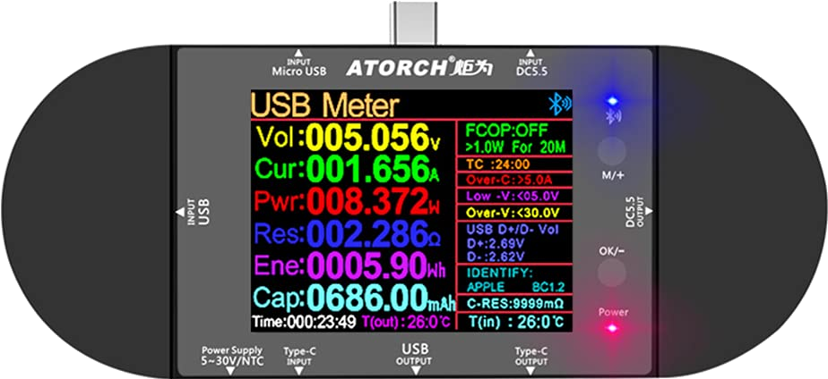
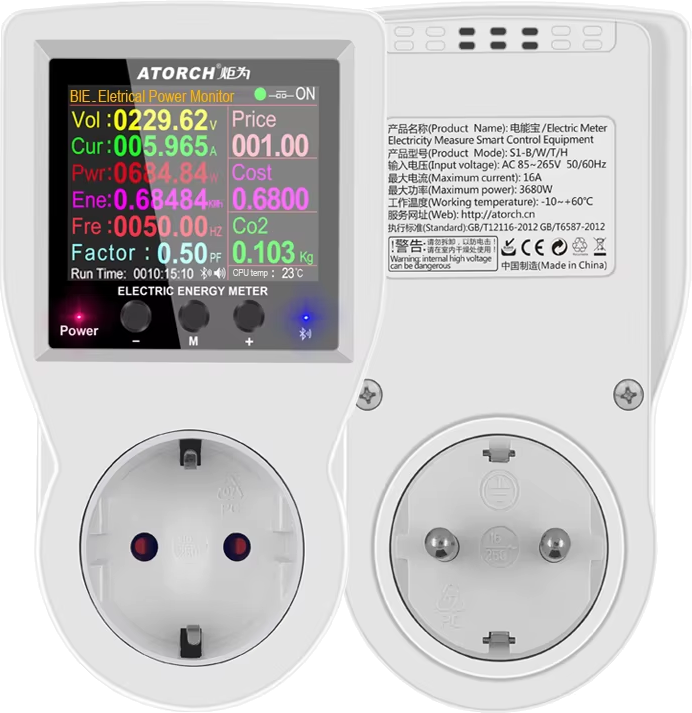
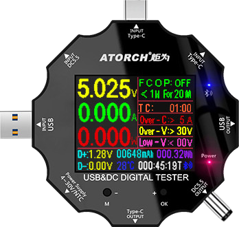

If you have one of these Atorch power meters, equiped with bluetooth- this application is expected to work.
Tested only with first (UD24) and second (S1B).



Click wifi icon in main screen top-right corner and select your device. It may be named UD24, UD18, S1B or something similar, depending on your device. If device is compatible- application should begin showing values on the screen
This application also have simulator function in case you do not have device on hand and would like to try it out
If you have another Atorch device and would like to help me integrate into this application- please contact me via my website.